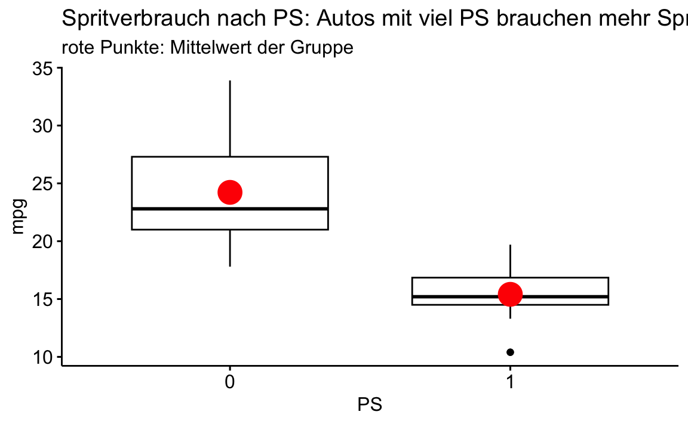

library(rstanarm)
library(easystats)
library(tidyverse)
library(ggpubr)Wskt-Schluckspecht2
post
bayes
mtcars
paper
Aufgabe
Geprüft werden soll folgende Hypothese:
Autos mit viel PS haben einen höheren (mittleren) Spritverbrauch als Autos mit wenig PS.
Höherer Spritverbrauch bedeutet geringere Spritsparsamkeit.
Dafür ist folgende Analyse gegeben.
Setup
data(mtcars)Modell und Hypothese
Die Variable mpg (Miles per Gallone) misst die Spritsparsamkeit.
Die Hypothese kann man wie folgt formalisieren:
\[\text{mpg}_{PS=1} < \text{mpg}_{PS=0},\]
“Die mittlere Spritsparsamkeit von Autos mit viel PS ist kleiner als die von Autos mit viel PS”.
Dabei meint \(PS=0\) die Autos mit wenig PS (und \(PS=1\) die Autos mit viel PS).
Die Prioris √ºbernehmen wir vom Stan-Golem.ü§ñ
ü§ñ Beep, beep!
üë©‚Äçüè´ An die Arbeit, Stan-Golem!
Vorverarbeitung
Wir definieren PS als eine binäre Variable, die angibt, ob ein Auto mehr oder weniger PS hat als der Median der PS-Werte:
mtcars <-
mtcars |>
mutate(PS = case_when(
hp > median(hp) ~ 1,
hp <= median(hp) ~ 0
))Modell berechnen
m <- stan_glm(mpg ~ PS, # Regressionsformel
data = mtcars, # Datensatz
refresh = 0, # Nicht so viel Detail-Ausgabe
seed = 42) # ReproduzierbarkeitHier sind die Modellparameter:
parameters(m)| Parameter | Median | CI | CI_low | CI_high | pd | Rhat | ESS | Prior_Distribution | Prior_Location | Prior_Scale |
|---|---|---|---|---|---|---|---|---|---|---|
| (Intercept) | 24.219612 | 0.95 | 22.07170 | 26.170915 | 1 | 1.0007744 | 3505.490 | normal | 20.09062 | 15.06737 |
| PS | -8.802191 | 0.95 | -11.61645 | -5.804179 | 1 | 0.9995466 | 3526.436 | normal | 0.00000 | 29.71825 |
Der Effekt von PS ist negativ, was bedeutet, dass Autos der Gruppe PS=1 einen um ca. 9 Meilen geringeren MPG-Wert haben als Autos der Gruppe PS=0. Das bedeutet, dass Autos mit viel PS einen höheren Spritverbrauch haben als Autos mit wenig PS.
Post-Verteilung auslesen
Hier ist das HDI (95%) zum Effekt von PS:
hdi(m) |> plot()Aufgabe
- Sprechen die Ergebnisse dafür, dass Autos mit viel PS einen höheren Spritverbrauch haben als Autos mit wenig PS? Begründen Sie.
- Wie hoch ist die Wahrscheinlichkeit, dass die Hypothese wahr ist (laut unserem Modell)?
- Was ist Ihr Punktschätzer für den Unterschied im Spritverbrauch zwischen Autos mit viel und wenig PS?
- Mit einer Wahrscheinlichkeit von 95% liegt der Unterschied im Spritverbrauch zwischen Autos mit viel und wenig PS zwischen welchen Werten (laut unserem Modell)?
- Geben Sie die Skalenniveaus der Variablen in der Regressionsformel an.
Lösung
- Ja, die Ergebnisse sprechen dafür, dass Autos mit viel PS einen höheren Spritverbrauch haben als Autos mit wenig PS. Die Posterior-Verteilung zeigt, dass die Wahrscheinlichkeit für die Hypothese sehr hoch ist: Alle Stichproben sind bzw. die gesamte Wahrscheinlichkeitsmasse ist kleiner als Null.
Der Parameter für PS ist negativ, was bedeutet, dass Autos mit viel PS einen höheren Spritverbrauch haben als Autos mit wenig PS. Das sieht man schon in den Stichprobendaten:
ggboxplot(mtcars,
x = "PS", y = "mpg",
title = "Spritverbrauch nach PS: Autos mit viel PS brauchen mehr Sprit als Autos mit wenig PS",
subtitle = "rote Punkte: Mittelwert der Gruppe",
add = "mean",
add.params = list(size = 1.5, color = "red"))
- Man sieht in der Visualisierung der Post-Verteilung, dass die komplette Wahrscheinlichkeitsmasse kleiner als Null ist. Das bedeutet, dass die Wahrscheinlichkeit, dass die Hypothese wahr ist, sehr hoch ist, gegen 1 geht.
Ca. -8.8021915 mpg-Einheiten ist ein guter Punktschätzer für den Unterschied im Spritverbrauch zwischen Autos mit viel und wenig PS. In der Ausgabetabelle (
parameters()) ist der Wert exakt angegeben.Den Unterschied im Spritverbrauch zwischen Autos mit viel und wenig PS liegt mit einer Wahrscheinlichkeit von 95% zwischen -5.8041793 und -11.6164504.
Das kann man der Parameter-Tabelle entnehmen. Man sieht es auch im Diagramm recht gut.
- UV: binär, AV: kontinuierlich